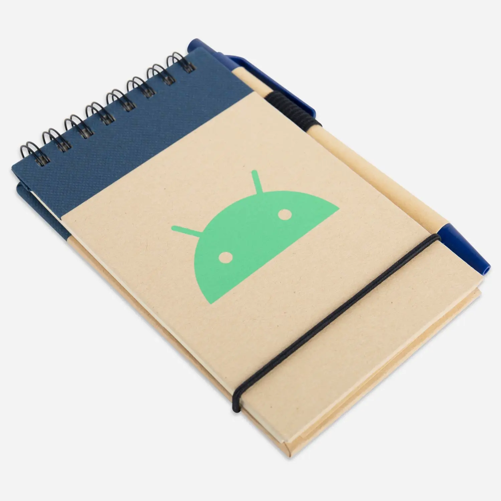

Android Jotter Task Pad is a small eco-friendly notepad with an included pen. Various things such as the cover and pen were recycled, buying this would've gotten 1% of the purchase donated to non-profits.
A sustainable way to take notes. This reporter-size Android notebook has a recycled cardboard cover and a matching pen with a recycled cardboard barrel that fits in the elastic pen loop. 1% of your purchase goes to nonprofits who protect our Earth.